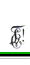
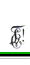

 
|
|
Vçsture 1899. gada 8. februârî deviòi Tçrbatas universitâtes Farmâcijas institûta latvieðu studenti nodibinâja treðo vecâko latvieðu studentu korporâciju ar nosaukumu Lettgallia, ar ko senâs hronikâs latîòu valodâ apzîmçja latvieðu apdzîvoto teritoriju. Korporâcijas krâsu nozîme izteikta karoga dziesmâ: zaïð – visas ðaubas veic , melns – nopietnîbâ darbs lai rit, balts – krûtîs tîra sirds lai sit. Dibinâtâju izstrâdâtais Internais Komâns, kas arî ietvçra arî Goda komânu, un Alus Komâns galvenajos vilcienos ir spçkâ vçl ðodien. 1912. gada 10. janvârî Lettgallia saòçma atïauju krâsu atsegðanai.
1901. gadâ pie korporâcijas nodibinâjâs Lettgallias Filistru Palîdzîbas Biedrîba, kas vçlâk pârdçvçjâs par Lettgallias Filistru Biedrîbu. Pirmo stipendiju L!F!P!B! izsniedza 1904. gadâ. 1927.gadâ L!F!B! nopirka namu Rîgâ, Dzirnavu ielâ 36, kurâ atrodas aktîvais konvents. L!F!B! Meþa kapos iepirka un izkopa kapu kalniòu, kurâ atdusas Rîgâ miruðie lettgaïi. 1947. gada 22. februârî L!F!B! apvienojâs ar aktîvo konventu. 1921. gadâ tika nodibinâta Dâmu komiteja, kas joprojâm ir aktîva. 1918. gadâ Lettgallias locekïi piedalîjâs Latvijas brîvîbas cîòâs un Lettgallia bija un ir viena no piecâm korporâcijâm, kas pârmaiòus glabâ Kalpaka bataljona Studentu rotas karogu. Letgaïiem, kuºi okupâcijas un 2. Pasaules kara laikâ zaudçja dzîvîbu par Latviju, konvents 1979.gada 2. jûnijâ L.K.I.A. brâïu kapos, Elka parkâ Òujorkas pavalstî, atklâja piemiòas plâksni. Kapos arî iekârtots nodalîjums Ziemeïamerikâ miruðiem letgaïiem un to piederîgiem. 1919. gada 27. septembrî Lettgallia kopâ ar èetrâm citâm latvieðu korporâcijâm piedalîjâs Prezidiju Konventa dibinâðanâ. Lettgallia pirmo reizi prezidçja P!K! 1921.gada 2. semestrî un L!K!A! 1962./ 63. gadâ.
Ievçrojamu vietu Lettgallias dzîvç kopð dibinâðanas ieòçmuði literârie vakari, kuros, bez obligâtiem krustdçlu referâtiem par aktuâliem nacionâliem, sabiedriskiem un zinâtniskiem tematiem uzstâjuðies gan paðu, gan citu konventu filistri. Kopð Tçrbatas laikiem krustdçli komerðos nolasa savu satîriska satura þurnâlu Ðmolis. Pie Lettgallias komânus ir garantçjuðas Fraternitas Metropolitana un Ruthenia. 1975. gada 17. maijâ Lettgallia noslçdza karteli (draudzîbas lîgumu) ar igauòu korporâciju Rotalia.
1989. gadâ Lettgallia bija viena no pirmajâm korporâcijâm, kas atjaunoja darbîbu Latvijâ. 1999. gada februârî Lettgallia nosvinçja 100 gadu pastâvçðanas jubileju - jubilejas pasâkumi notika triju kontinentu valstîs – Latvijâ, ASV, Austrâlijâ. 2001. gada 2. semestrî Lettgallia prezidçja P!K! un par godu 18. novembrim LU Lielajâ aulâ organizçja koncertu Studenti Latvijai. Patlaban Lettgallia ir viena no aktîvâkajâm studentu korporâcijâm Latvijâ. Lîdztekus aktîvai internai korporâcijas dzîvei letgaïi aktîvi piedalâs eksternos pasâkumos - letgaïi ir vieni no P!K! hokeja komandas dibinâtâjiem 2001. gadâ; mûsu korporâcijas biedri piedalâs korporâciju teâtra dienâs, mâkslas dienâs, sporta un aktîvâs atpûtas pasâkumos. Ikdienâ korporâcijas jaunajiem biedriem - krustdçliem notiek mâcîbu stundas, kur galvenâ loma ir ierâdîta patriotisma, uzticîbas, godîguma un stâjas izkopðanai un attîstîbai.
|
|